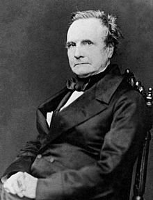

Charles Babbage was an English mathematician, engineer, inventor and philospher. His most famous contribution to the words is his creation of the conept of a programmable computer.
Often reffered to as the "father of the computer", Babbage is believed to be the first to invent the mechanical computer that was the precursor to many more complex designs.
|  | |
| Name | Charles Babbage |
|---|---|
| Lived | 26.12.1791 - 18.10.1871 |
| Nationality | British |